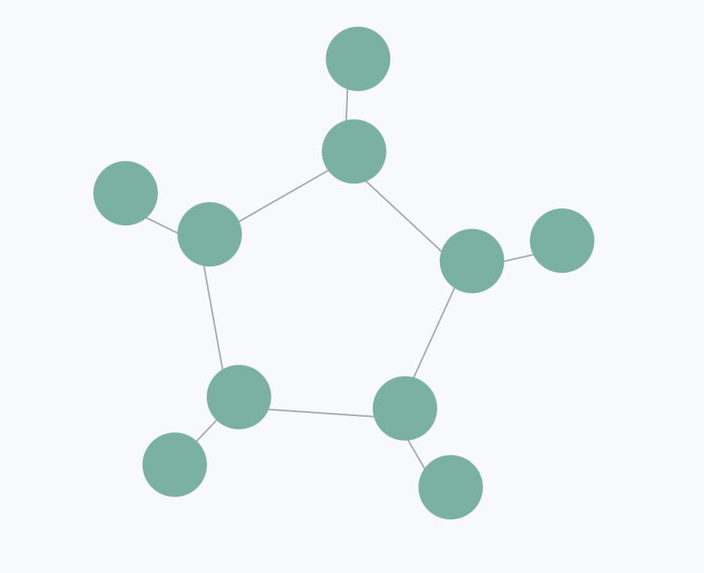
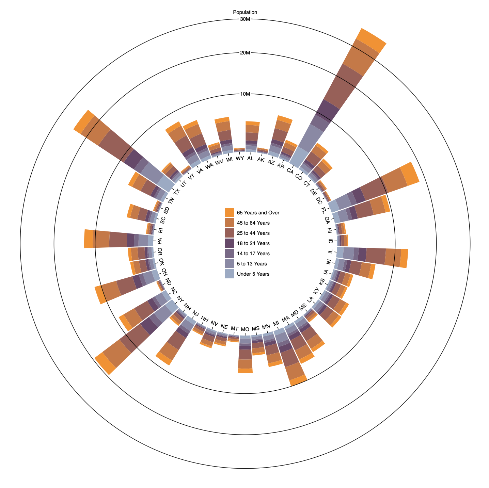
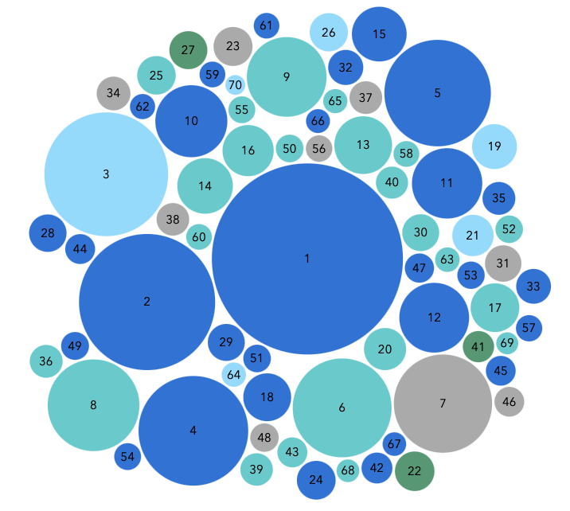
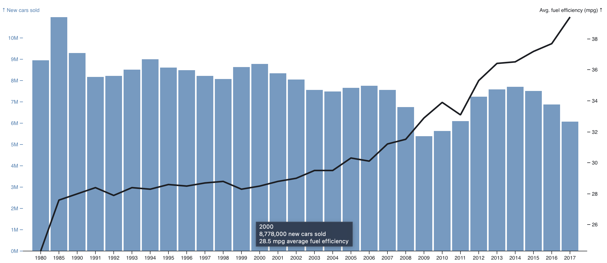

US States Patents Counts
CPC Classes:
All
A61 - Medical or Vetertnary Science
H04 - Electric Communication Technique
H01 - Basic Electric Elements
G06 - Computing; Calculating; Counting
Trends for CPC classes and Patent Types
Select:
CPC Class
Patent Types
--Select CPC Class--
A61
H04
H01
G06
--Select Patent Types--
Utility
ReIssue
Plant
Design
Statutory Invention Registration
Your browser does not support the video tag.
Relationship between different CPC classes


Impact on assigness based on the published patents wrt Stock Price
Year Period:
--Select a Year--
1985-1990
1990-1995
1995-2000
2000-2005
2005-2010
2010-2015
2015-2020
2020-2025

